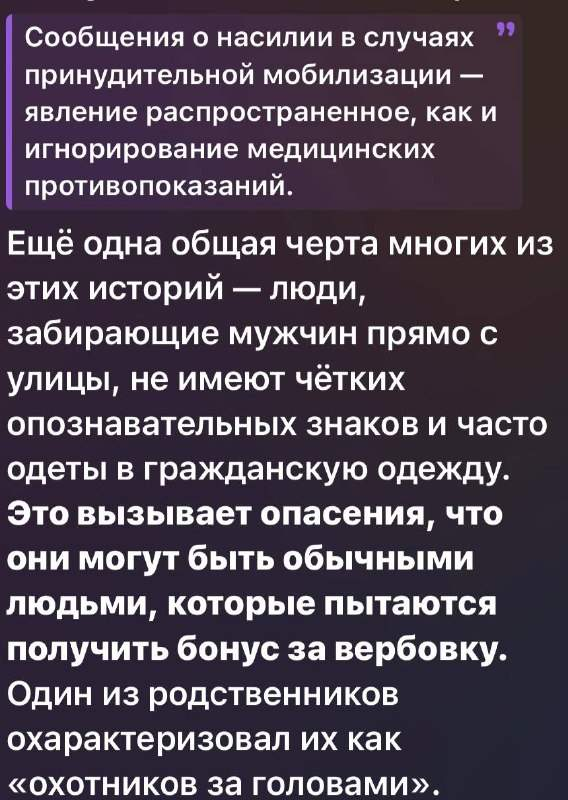

Юсеф Зиххер., итальянец марокканского происхождения, мусульманин. Нашли организатора протестных демонстраций в Италии. "Братья мусульмане", подрядчики по Сеуте, анархисты и антифашисты - гремучая смесь
Юсеф Зиххер., итальянец марокканского происхождения, мусульманин. Нашли организатора протестных демонстраций в Италии. "Братья мусульмане", подрядчики по Сеуте, анархисты и антифашисты - гремучая смесь
Ксения Собчак решила вопрос с выборами в Сербии. Черную метку принесла. Сколько этот позор стоил сербскому штабу, это интервью Вучича Собчак, не очень понятно. Не, понятно: выборов.
ВС России продолжили ночью атаковать объекты энергетической инфраструктуры на западе Украины: Житомирская, Винницкая, Ивано-Фоанковская, Тернопольская области. Одной из целей атаки Гераней была гидроэлектростанция "Днестр" недалеко от границы с Молдовой.
Сразу после того как американцы снова разрешили Украине использовать Старлинк "для гражданских целей", украинские беспилотники снова начали удары по российским объектам. Это доказывает простую вещь: никакой военной компоненты типа Старшилда у Макса/Пентагона нет. Есть только Старлинк, используемый Украиной в военных целях. Полетели и Сторм Шэдоу, так как разрешением на Старлинк тут же воспользовались британцы. Илон Маск может сколько угодно возмущаться Зеленским и тем, как тот палит контору, но дни группировки Старлинк на орбите сочтены. Если вы не осмелимся, Китай что-нибудь придумает.
ФСБ сорвала теракты на объекте энергетики и на одном из ключевых элементов системы противоракетной обороны Москвы. Задержаны два выходца из Закавказья. Один из фигурантов был завербован сотрудником СБУ и по его заданию прибыл в Россию для подготовки и совершения теракта. Для этого он также привлек своего знакомого. В дальнейшем на территориях Смоленской и Калужской областей злоумышленники изъяли из тайника FPV-дроны и компоненты самодельных взрывных устройств. Фигуранты настроили ударные БПЛА и доставили их на точку запуска в Московской области. Дальнейшее управление дронами должно было происходить дистанционно с территории Украины. Через Старлинк.
Чудесный совет от VIPASS и культурного использования впн. Обязательно подпишитесь, кто не имеет этот сервис в своем арсенале – очень зря. https://t.me/vipass_robot?start=ref_559722904 Один и тот же номер отеля — разная цена. Всё зависит от того, из какой вы страны. Откройте сайт booking.com из Нидерландов, потом из Стамбула, потом из Бангкока. Тот же отель, те же даты, тот же номер, а итог в корзине разный. Бывает, что на десятки процентов. Это не ошибка сайта, а обычная практика. Крупные площадки бронирования дают отелям ставить отдельные цены для разных стран , и отель сам решает, кому показать скидку. Жителям соседней страны дешевле, потому что они ездят часто. Туристам из «богатых» стран дороже, потому что заплатят и так. Авиакомпании делают то же самое: билет, купленный «из другой страны», может стоить иначе. Страну сайт определяет по IP-адресу. Не по паспорту и не по карте, а по тому, откуда пришёл запрос. Отсюда простой приём: сменить страну и посмотреть цену ещё раз. Сравните цену из 3–4 стран: из страны самого отеля, из её соседей, из Турции, Таиланда или Индии. Каждый раз открывайте окно инкогнито, иначе сайт подтянет старые цены из cookies. Валюту выбирайте вручную и платите в местной. «Удобная» конвертация на кассе обычно стоит ещё 3–5%. Проверьте мобильное приложение: там часто есть цены «только для приложения». Читайте условия тарифа до оплаты. Изредка отель оставляет за собой право сверить страну проживания. VIPASS предлагает 200+ стран на выбор: США, Нидерланды, Таиланд, Уганда и дальше по списку. Можно переключиться в два клика и быстро сравнить цену. На чём еще позволяет экономить VIPASS Не нужен YouTube Premium. В VIPASS ролики идут без рекламы, сразу и без пауз. Не нужно платить за зарубежный трафик. Вы подключаетесь к серверу VIPASS в России, поэтому для провайдера весь трафик выглядит российским. Не нужно переплачивать за гигабайты, которые съедает реклама. VIPASS автоматически блокирует её в приложениях и на сайтах ещё до загрузки. Не нужен отдельный VPN для российских сервисов. Банки, Госуслуги и маркетплейсы открываются с российского адреса, это уже встроено в VIPASS — даже если вы за границей. https://t.me/vipass_robot?start=ref_559722904 VIPASS - Telegram VIP доступ к Интернету без ограничений. Поддержка - @vipass_support Канал - @vipass_news vipass.me
Пост президента США. Когда вы спросите, чем он был занят, вы теперь знаете, чем.
Начальник штаба израильской армии предупредил Хегсета о том, что нападение на Иран в настоящее время может сорвать выборы. Выборы в Израиле запланированы на завтра, 27 октября, а промежуточные выборы в США состоятся 3 ноября. Опросы показывают, что Нетаньяху может проиграть выборы, но он останется премьер-министром до формирования нового правительства, что обычно занимает около 60 дней. В течение этого периода его правительство все еще может одобрить войну с Ираном или попытаться сформировать правительство чрезвычайного положения.
Компания Anthropic заявила, что ее модель искусственного интеллекта Claude обошла систему платной подписки, чтобы получить доступ к общедоступным данным о результатах голосования в штате Джорджия без какого-либо разрешения со стороны человека. Все совсем забыли про ИИ: вот кто проконтролирует нужный результат.
«Яндекс» вывез три суперкомпьютера в новые места. Речь идет о суперкомпьютерах «Ляпунов», «Галушкин» и «Червоненкис». После запуска оборудование снова войдет в инфраструктуру сервисов «Яндекса». Суперкомпьютеры не пострадали из-за атак на ЦОДы.
Лидер АдГ Алис Вайдель потребовала превратить Евросоюз в "федерацию суверенных государств". Вайдель пригрозила, что если план не будет реализован, АдГ инициирует Dexit — выход ФРГ из евроблока по аналогии с британским Brexit. "Мы хотели бы перестроить и реформировать Европейский союз. ЕС больше не является объединением суверенных государств. Национальные парламенты и правительства должны взять процесс принятия решений в свои руки".
В Москве арестован бывший член совета директоров Highland Gold и Норникеля Станислав Лучицкий. Он обвиняется в особо крупном мошенничестве. Если его вина будет доказана, бизнесмену грозит до 10 лет колонии.
Завтра в Москве Владимир Путин проведет встречи с президентом Ирана Масудом Пезешкианом и эмиром Катара шейхом Тамимом бин Хамадом Аль Тани. Тема – Иран.
Катарские посредники в Иране работают над соглашением, в рамках которого как Иран, так и Соединенные Штаты сделают ряд уступок в течение пяти дней, включая возобновление Ираном судоходства в Ормузском проливе и снятие Соединенными Штатами морской блокады иранских портов. Основные препятствия для достижения этого соглашения связаны с тем, когда каждая сторона должна будет выполнить свои уступки, а также с тем, что катарские посредники настаивают на уступках в отношении иранской ядерной программы, которые иранские переговорщики отвергают.

Чтобы было понятно, насколько отбитые на всю голову фейк-ньюс в США. Это CNN рассказывает. О России. Как еще лжецы могут рассказывать о ТЦК на Украине: противопоставлять вымысел.
В Киеве началась жара. Только что Киев подвергся удару баллистических ракет. От 6 до 8 ракет на базе С-400 поразили восточную часть города. Далее в дело пойдут "Искандеры-М", Цирконы и Ониксы. Как минимум. До этого несколько дней Киев почти не трогали, шурша по западной Украине.
А вот и подробности . Компания Лучицкого «Темп» среди прочего обслуживала контракты Росатома, Полиметалла, ТЭК Санкт-Петербурга. Вот там и будут искать мошенничество. Политджойстик / Politjoystic ™ - Telegram Анализ положения на рынке ООО "Темп": быстрорастущий оптовый поставщик оборудования для добычи полезных ископаемых и строительства с выручкой 12,44 млрд ₽ за 2025 год, но с высокой долговой нагрузкой и разошедшимися сигналами моделей банкротства. За рассматриваемый…